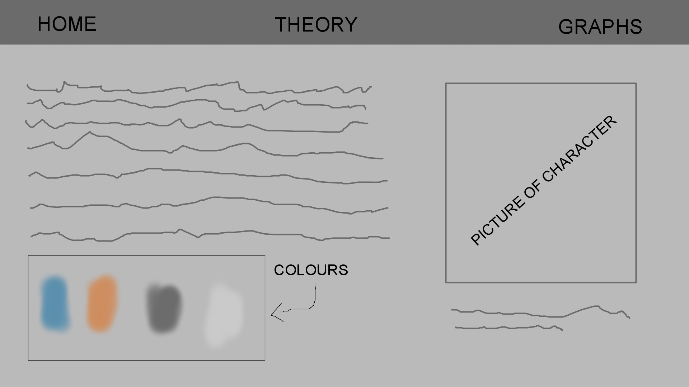
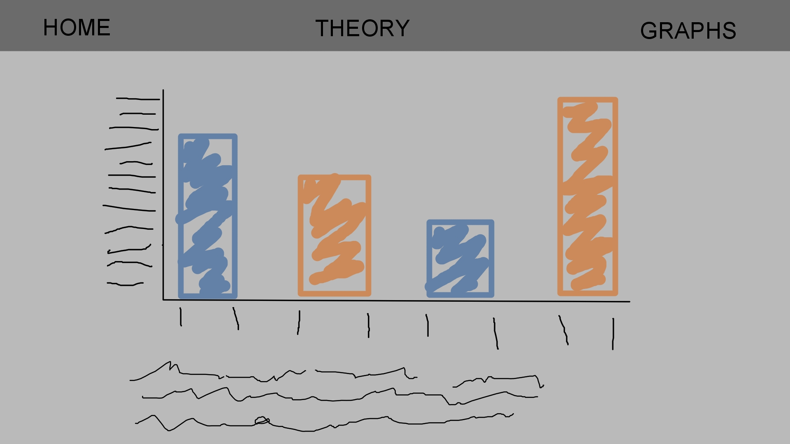

STYLE GUIDE
This website is focused on data visualization. I wanted to keep things simple seeing that simple websites are easier to digest in my opinion and I like the look of clean websites. I decided to use some of my favourite colours seeing that they complement each other well while having good contrasts with one another. My main goal for this website is to focus on the graphs rather than making the website pretty. That being said, I will try to make the website look nice. My initial style for this site was changed into the blue style it is now after peer reviews have revealed how "ugly" the orange was.
HOME PAGE WIREFRAME
GRAPH PAGE WIREFRAME
RATIONALE
The reason I decided on using the data that I did is because I wanted to share perspective on Johannesburg and which aspects of the city needs to be considered with regards to quality of life while showing the contrast of Joburg and New York City (a rich first world city). I feel that a lot of people (myself included) get lost in pessimism or optimism when talking about how much we love or hate the place that we live in. I wanted to make graphs that show which aspects of the cities are good and which aspects are bad, these aspects will hopefully give perspective on the viewer's city with regards to how good or bad they actually have it. My two interactive graphs represent one of the worst and one of the best cities in the world. I chose to use the data for these two cities in order to show how the least and most privileged people in the world live. I wanted to show the contrast between the two extremes. My data driven art was made with Joburg’s data, and I decided to reiterate Joburg’s data because I live in Joburg, I thus felt like using a city I know to make the art. As a photographer I like expressing myself through pictures and I Thus decided to make a picture with the data.